IOM Example - Concrete Column
This example describes how to define a concrete column in IOM (IDEA StatiCa Open Model).
Let's create a standard console application in MS Visual Studio. Select File > New > Project from the menu bar. In the dialog, select the Visual C# node followed by the Get Started node. Then select the Console App project template.
Add the IdeaRS.OpenModel NuGet package
OpenModel is published as the nuget package. To install this package, you can use either the Package Manager UI or the Package Manager Console.
For more information, see Install and use a package in Visual Studio
There is also documentation related to IdeaRS.OpenModel on Github.
Create a new project
IOM data has to contain basic information of a new project, such as a project name, description, code type etc.
//Common project data
var projectData = new ProjectData();
projectData.Name = "Column project";
projectData.Date = new DateTime(2019, 6, 4);
//Additionl data for Ec
var projectDataEc = new ProjectDataEc();
projectDataEc.AnnexCode = NationalAnnexCode.NoAnnex;
projectDataEc.FatigueCheck = false;
projectDataEc.FatigueAnnexNN = false;
projectData.CodeDependentData = projectDataEc;
openModel.ProjectData = projectData;
//Concrete project data
var projectDataConcrete = new ProjectDataConcreteEc2();
projectDataConcrete.CodeEN1992_2 = false;
projectDataConcrete.CodeEN1992_3 = false;
openModel.ProjectDataConcrete = projectDataConcrete;
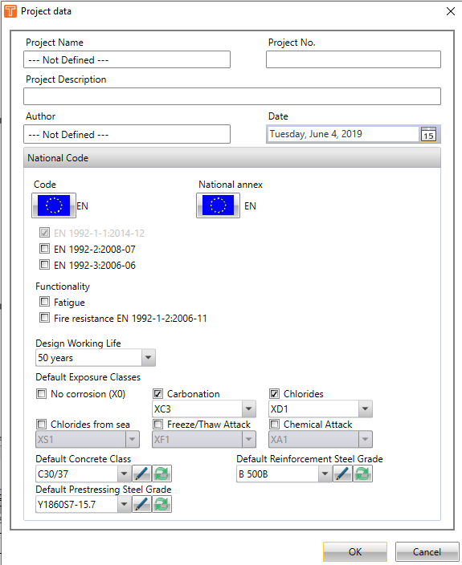
Materials
To create a new project, these types of materials have to be created:
- a new concrete material
//Concrete material
MatConcreteEc2 mat = new MatConcreteEc2();
mat.Name = "C30/37";
mat.UnitMass = 2500.0;
mat.E = 32836.6e6;
mat.G = 13667000000.0;
mat.Poisson = 0.2;
mat.SpecificHeat = 0.6;
mat.ThermalExpansion = 0.00001;
mat.ThermalConductivity = 45;
mat.Fck = 30.0e6;
mat.CalculateDependentValues = true;
openModel.AddObject(mat);
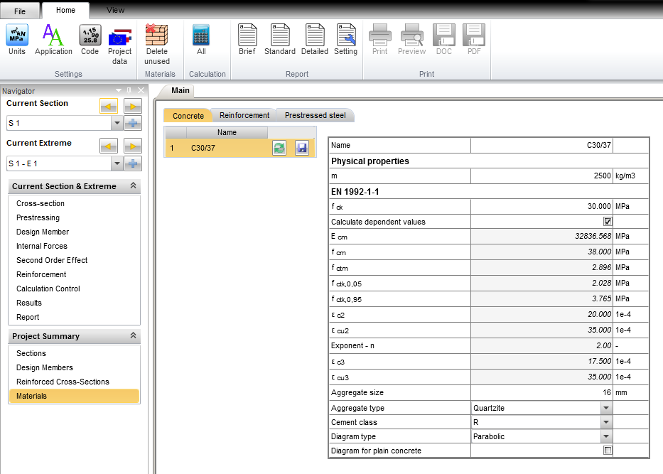
- a new material of reinforcement
//Reinforcement material
MatReinforcementEc2 matR = new MatReinforcementEc2();
matR.Name = "B 500B";
matR.UnitMass = 7850.0;
matR.E = 200e9;
matR.Poisson = 0.2;
matR.G = 83.333e9;
matR.SpecificHeat = 0.6;
matR.ThermalExpansion = 0.00001;
matR.ThermalConductivity = 45;
matR.Fyk = 500e6;
matR.CoeffFtkByFyk = 1.08;
matR.Epsuk = 0.025;
matR.Type = ReinfType.Bars;
matR.BarSurface = ReinfBarSurface.Ribbed;
matR.Class = ReinfClass.B;
matR.Fabrication = ReinfFabrication.HotRolled;
matR.DiagramType = ReinfDiagramType.BilinerWithAnInclinedTopBranch;
openModel.AddObject(matR);
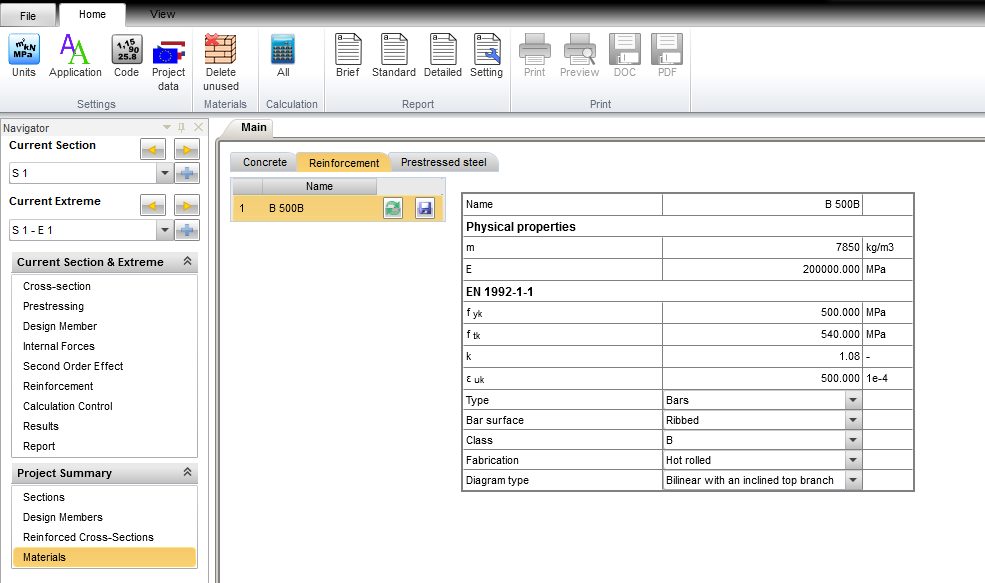
Cross-section
The next step is to define the shape and dimensions of cross-section and type of material.
CrossSectionParameter css = new CrossSectionParameter(); //creating instance of cross-section defined by parameters
css.Name = "CSS 1";
css.Id = openModel.GetMaxId(css) + 1;
css.CrossSectionType = CrossSectionType.Rect;
css.Parameters.Add(new ParameterDouble() { Name = "Height", Value = 0.5 });
css.Parameters.Add(new ParameterDouble() { Name = "Width", Value = 0.5 });
css.Material = new ReferenceElement(mat);
openModel.AddObject(css);
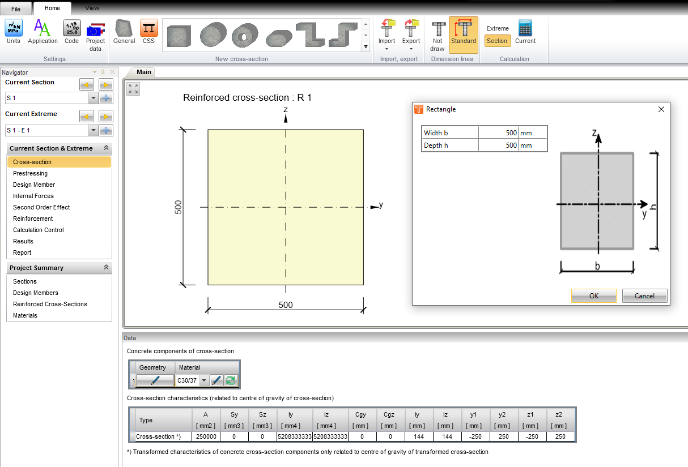
Reinforced cross-sections
After defining the concrete cross-section, reinforcement is set into this one. The reinforced section is defined in this way and it is referenced to the concrete cross-section.
A list of all reinforced cross-sections in project.
//Reinforced section - concrete with reinforcement
ReinforcedCrossSection rcs = new ReinforcedCrossSection();
rcs.Name = "R 1";
rcs.CrossSection = new ReferenceElement(css);
openModel.AddObject(rcs);
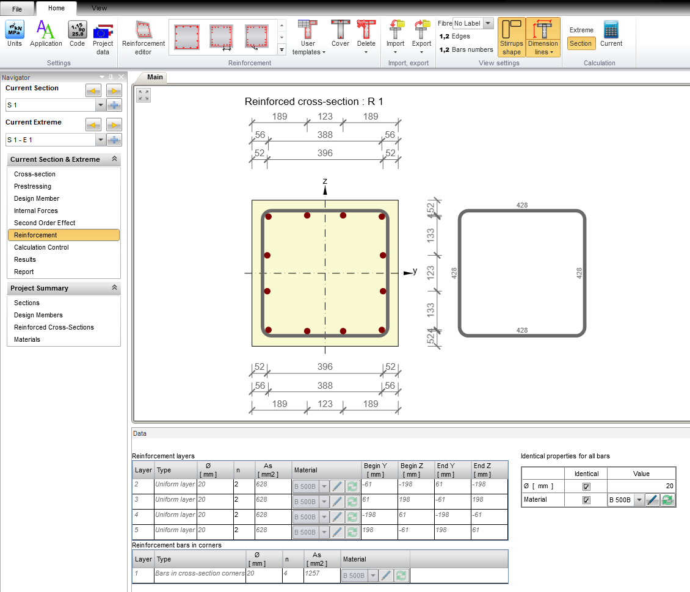
Reinforcement
Reinforcement is define as stirrups and longitudinal bars.
Longitudinal reinforcement
Define position, material, diameter and quantity of longitudinal reinforcement.
ReinforcedBar bar = new ReinforcedBar();
bar.Diameter = 0.020;
bar.Material = new ReferenceElement(matR);
bar.Point = new Point2D();
bar.Point.X = -0.1939;
bar.Point.Y = 0.1939;
rcs.Bars.Add(bar);
bar = new ReinforcedBar();
bar.Diameter = 0.020;
bar.Material = new ReferenceElement(matR);
bar.Point = new Point2D();
bar.Point.X = -0.1939;
bar.Point.Y = -0.1939;
rcs.Bars.Add(bar);
bar = new ReinforcedBar();
bar.Diameter = 0.020;
bar.Material = new ReferenceElement(matR);
bar.Point = new Point2D();
bar.Point.X = 0.1939;
bar.Point.Y = -0.1939;
rcs.Bars.Add(bar);
bar = new ReinforcedBar();
bar.Diameter = 0.020;
bar.Material = new ReferenceElement(matR);
bar.Point = new Point2D();
bar.Point.X = 0.1939;
bar.Point.Y = 0.1939;
rcs.Bars.Add(bar);
bar = new ReinforcedBar();
bar.Diameter = 0.020;
bar.Material = new ReferenceElement(matR);
bar.Point = new Point2D();
bar.Point.X = -0.0613;
bar.Point.Y = -0.198;
rcs.Bars.Add(bar);
bar = new ReinforcedBar();
bar.Diameter = 0.020;
bar.Material = new ReferenceElement(matR);
bar.Point = new Point2D();
bar.Point.X = 0.0613;
bar.Point.Y = -0.198;
rcs.Bars.Add(bar);
bar = new ReinforcedBar();
bar.Diameter = 0.020;
bar.Material = new ReferenceElement(matR);
bar.Point = new Point2D();
bar.Point.X = 0.0613;
bar.Point.Y = 0.198;
rcs.Bars.Add(bar);
bar = new ReinforcedBar();
bar.Diameter = 0.020;
bar.Material = new ReferenceElement(matR);
bar.Point = new Point2D();
bar.Point.X = -0.0613;
bar.Point.Y = 0.198;
rcs.Bars.Add(bar);
bar = new ReinforcedBar();
bar.Diameter = 0.020;
bar.Material = new ReferenceElement(matR);
bar.Point = new Point2D();
bar.Point.X = -0.198;
bar.Point.Y = 0.0613;
rcs.Bars.Add(bar);
bar = new ReinforcedBar();
bar.Diameter = 0.020;
bar.Material = new ReferenceElement(matR);
bar.Point = new Point2D();
bar.Point.X = -0.198;
bar.Point.Y = -0.0613;
rcs.Bars.Add(bar);
bar = new ReinforcedBar();
bar.Diameter = 0.020;
bar.Material = new ReferenceElement(matR);
bar.Point = new Point2D();
bar.Point.X = 0.198;
bar.Point.Y = -0.0613;
rcs.Bars.Add(bar);
bar = new ReinforcedBar();
bar.Diameter = 0.020;
bar.Material = new ReferenceElement(matR);
bar.Point = new Point2D();
bar.Point.X = 0.198;
bar.Point.Y = 0.0613;
rcs.Bars.Add(bar);
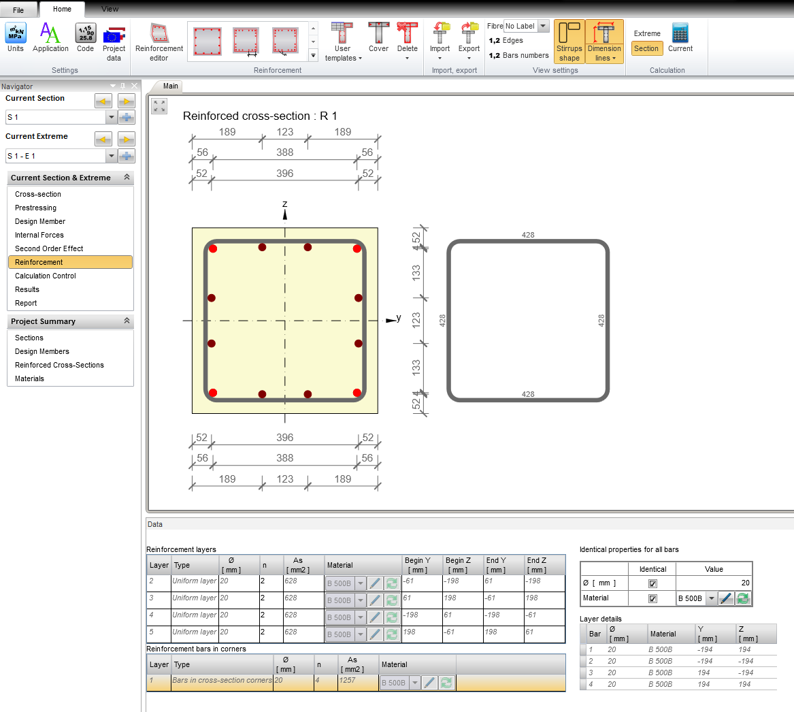
Stirrups
Setting shape, diameter and material of stirrup.
var stirrup = new Stirrup();
stirrup.Diameter = 0.012;
stirrup.DiameterOfMandrel = 4.0;
stirrup.Distance = 0.2;
stirrup.IsClosed = true;
stirrup.Material = new ReferenceElement(matR);
var poly = new PolyLine2D();
poly.StartPoint = new Point2D();
poly.StartPoint.X = -0.214;
poly.StartPoint.Y = 0.214;
var segment = new LineSegment2D();
segment.EndPoint = new Point2D();
segment.EndPoint.X = -0.214;
segment.EndPoint.Y = -0.214;
poly.Segments.Add(segment);
segment = new LineSegment2D();
segment.EndPoint = new Point2D();
segment.EndPoint.X = 0.214;
segment.EndPoint.Y = -0.214;
poly.Segments.Add(segment);
segment = new LineSegment2D();
segment.EndPoint = new Point2D();
segment.EndPoint.X = 0.214;
segment.EndPoint.Y = 0.214;
poly.Segments.Add(segment);
segment = new LineSegment2D();
segment.EndPoint = new Point2D();
segment.EndPoint.X = -0.214;
segment.EndPoint.Y = 0.214;
poly.Segments.Add(segment);
stirrup.Geometry = poly;
rcs.Stirrups.Add(stirrup);
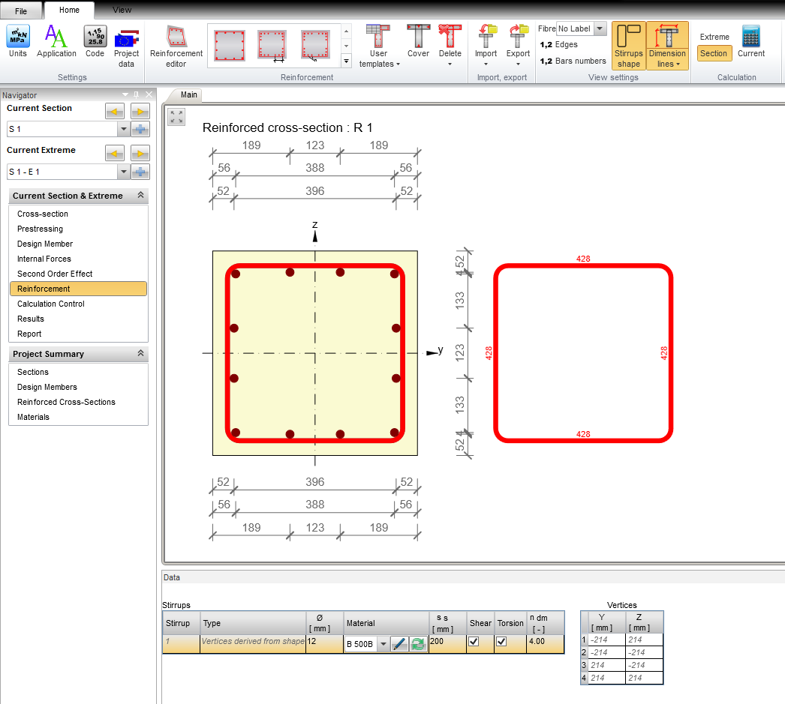
Design member
Design member contains information about whole checked member. In the first step, it is required to define design member and then the member data are set into the design member.
var checkMember = new CheckMember1D(); //Design member data object
openModel.AddObject(checkMember);
Member data
Setting of exposure classes, humidity and other important factors for the calculations (for example creep).
//Concrete member data
var memberData = new ConcreteMemberDataEc2(); //Member data base common object
memberData.MemberType = ConcreteMemberType.Column;
memberData.RelativeHumidity = 0.65;
memberData.CreepCoeffInfinityValue = InputValue.Calculated;
memberData.MemberImportance = MemberImportance.Major;
memberData.ExposureClassesData = new ExposureClassesDataEc2(); //Exposure classes
memberData.ExposureClassesData.NoCorrosionCheck = false;
memberData.ExposureClassesData.CarbonationCheck = true;
memberData.ExposureClassesData.Carbonation = ExposureClassEc2.XC3;
memberData.ExposureClassesData.ChloridesCheck = true;
memberData.ExposureClassesData.Chlorides = ExposureClassEc2.XD1;
memberData.ExposureClassesData.ChloridesFromSeaCheck = false;
memberData.ExposureClassesData.FreezeAttackCheck = false;
memberData.ExposureClassesData.ChemicalAttackCheck = false;
memberData.Element = new ReferenceElement(checkMember);
openModel.AddObject(memberData);
//Beam data are not necessary but must be created a default one
memberData.BeamData = new BeamDataEc2();
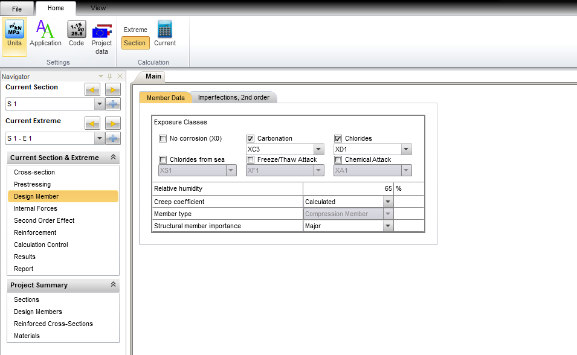
Imperfections
For calculation of second order effects, effective length of column and other parameters have to be set.
//Concrete member data
memberData.ColumnData = new ColumnDataEc2();
memberData.ColumnData.L = 3.0;
memberData.ColumnData.EffectiveLength = InputValue.UserInput;
memberData.ColumnData.L0Y = 3.0;
memberData.ColumnData.L0Z = 3.0;
memberData.ColumnData.SecondOrderEffectInput = InputValue.Calculated;
memberData.ColumnData.GeometricImperfectionsULS = true;
memberData.ColumnData.GeometricImperfectionsSLS = false;
memberData.ColumnData.EffectConsidered = EffectConsideredType.IsolatedMember;
memberData.ColumnData.ImperfectionDirection = ImperfectionDirection.FromSetup;
memberData.ColumnData.Calculation2ndOrderEffect = true;
memberData.ColumnData.BracedY = false;
memberData.ColumnData.BracedZ = false;
memberData.ColumnData.SecondOrderEffectMethod = SecondOrderEffectMethodEc2.NominalCurvature;
memberData.ColumnData.ValueTypeOfcY = ValueTypec.UserDefined;
memberData.ColumnData.UserValuecY = 9.8696;
memberData.ColumnData.ValueTypeOfcZ = ValueTypec.UserDefined;
memberData.ColumnData.UserValuecZ = 9.8696;
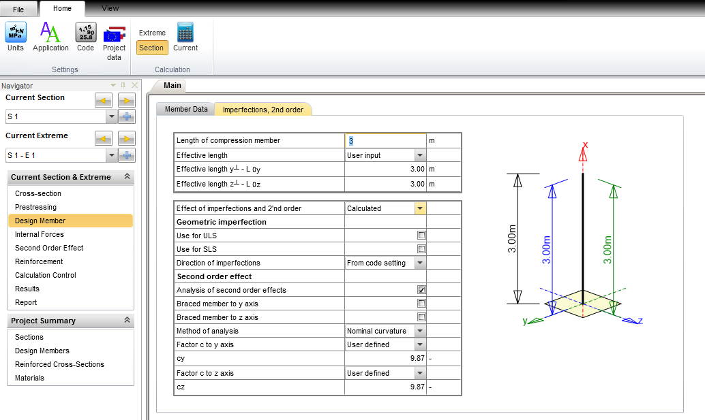
Sections, Extremes, Internal forces, Second order effect
The reinforced cross-section and the check member are defined for the checked section. Extremes of internal forces (for ULS and SLS calculation) are set in the checked section data there.
For assessment of limit states, actual internal forces into the analyzed cross-section need to be insert. To calculate second order effects is necessary to insert the correct values of bending moment on the top and bottom of the column.
//Standard section
var singleCheckSection = new StandardCheckSection();
singleCheckSection.Description = "S 1";
singleCheckSection.ReinfSection = new ReferenceElement(rcs);
singleCheckSection.CheckMember = new ReferenceElement(checkMember);
//add extreme to section
var sectionExtreme = new StandardCheckSectionExtreme();
sectionExtreme.Fundamental = new LoadingULS();
sectionExtreme.Fundamental.InternalForces = new IdeaRS.OpenModel.Result.ResultOfInternalForces() { N = -3750.0e3, My = 112.7e3, Mz = -52.0e3 };
sectionExtreme.Fundamental.InternalForcesBegin = new IdeaRS.OpenModel.Result.ResultOfInternalForces() { My = 22.0e3, Mz = -5.0e3 };
sectionExtreme.Fundamental.InternalForcesEnd = new IdeaRS.OpenModel.Result.ResultOfInternalForces() { My = 18.0e3, Mz = 10.0e3 };
singleCheckSection.Extremes.Add(sectionExtreme);
openModel.AddObject(singleCheckSection);
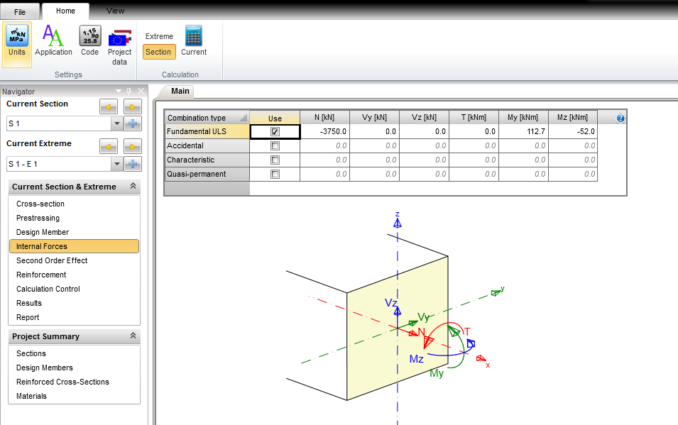
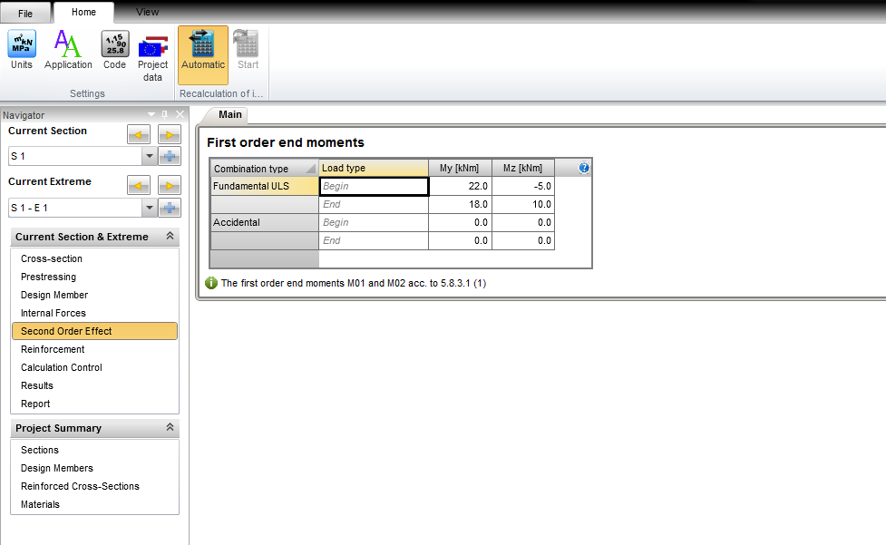
Calculation control
This setting define, which type of assessment will be used and corresponding results will be displayed.
memberData.CalculationSetup = new CalculationSetup();
memberData.CalculationSetup.UlsDiagram = true;
memberData.CalculationSetup.UlsShear = false;
memberData.CalculationSetup.UlsTorsion = false;
memberData.CalculationSetup.UlsInteraction = true;
memberData.CalculationSetup.SlsStressLimitation = true;
memberData.CalculationSetup.SlsCrack = true;
memberData.CalculationSetup.Detailing = true;
memberData.CalculationSetup.UlsResponse = true;
memberData.CalculationSetup.SlsStiffnesses = false;
memberData.CalculationSetup.MNKappaDiagram = false;
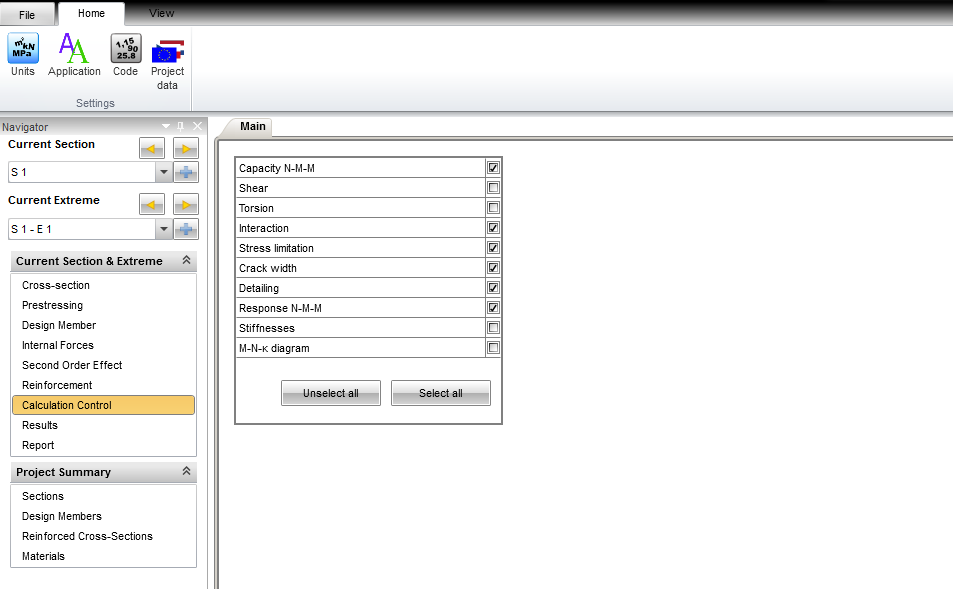
Concrete setup
Creating the code setup used for assessment of cross-section including national annex settings.
//Concrete setup
var setup = new ConcreteSetupEc2();
setup.Annex = NationalAnnexCode.NoAnnex;
openModel.ConcreteSetup = setup;
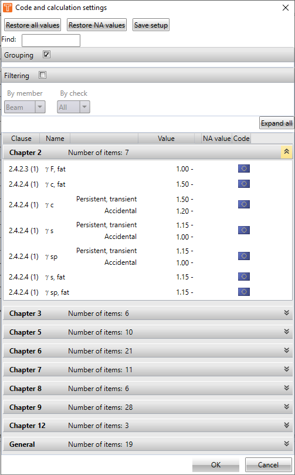
Results
In the followed example there is way how to run the check and the get results. Results are stored in the object with considered values for each assessment.
//Creating instance of Rcs controller
var rcsController = new IdeaStatiCa.RcsController.IdeaRcsController();
System.Diagnostics.Debug.Assert(rcsController != null);
//Assert.IsNotNull(rcsController);
//Open rcs project from IOM
IdeaRS.OpenModel.Message.OpenMessages messages;
var ok = rcsController.OpenIdeaProjectFromIdeaOpenModel(openModel, "Column", out messages);
System.Diagnostics.Debug.Assert(ok);
rcsController.SaveAsIdeaProjectFile(fileName);
//Calculate project
ok = rcsController.Calculate(new List<int>() { singleCheckSection.Id });
System.Diagnostics.Debug.Assert(ok);
//gets the results
var result = rcsController.GetResultOnSection(null);
System.Diagnostics.Debug.Assert(result != null);
// Storing to standard xml file
XmlSerializer xs = new XmlSerializer(typeof(List<IdeaRS.OpenModel.Concrete.CheckResult.SectionConcreteCheckResult>));
Stream fs = new FileStream(fileName, FileMode.Create);
XmlTextWriter writer = new XmlTextWriter(fs, Encoding.Unicode);
writer.Formatting = Formatting.Indented;
// Serialize using the XmlTextWriter.
xs.Serialize(writer, result);
writer.Close();
fs.Close();
var sectionResult = result.FirstOrDefault(it => it.SectionId == singleCheckSection.Id);
System.Diagnostics.Debug.Assert(result != null);
foreach (var extremeResult in sectionResult.ExtremeResults)
{
var overalResult = extremeResult.Overall;
foreach (var check in overalResult.Checks)
{
System.Diagnostics.Debug.WriteLine("{0} - {1} - {2}", check.ResultType, check.Result, check.CheckValue);
}
foreach (var checkResult in extremeResult.CheckResults)
{
var checkType = checkResult.ResultType;
foreach (var checkResult1 in checkResult.CheckResults)
{
var res = checkResult1.Result;
switch (checkResult.ResultType)
{
case IdeaRS.OpenModel.Concrete.CheckResult.CheckResultType.Capacity:
var resultCapacity = checkResult1 as IdeaRS.OpenModel.Concrete.CheckResult.ConcreteULSCheckResultDiagramCapacityEc2;
var fu1 = resultCapacity.Fu1;
var fu2 = resultCapacity.Fu2;
break;
case IdeaRS.OpenModel.Concrete.CheckResult.CheckResultType.Interaction:
var resultInteraction = checkResult1 as IdeaRS.OpenModel.Concrete.CheckResult.ConcreteULSCheckResultInteractionEc2;
var checkVT = resultInteraction.CheckValueShearAndTorsion;
var checkVTB = resultInteraction.CheckValueShearTorsionAndBending;
break;
}
if (checkResult1.NonConformities.Count > 0)
{
var issues = rcsController.GetNonConformityIssues(checkResult1.NonConformities.Select(it => it.Guid).ToList());
foreach (var issue in issues)
{
System.Diagnostics.Debug.WriteLine(issue.Description);
}
}
}
}
}
rcsController.Dispose();
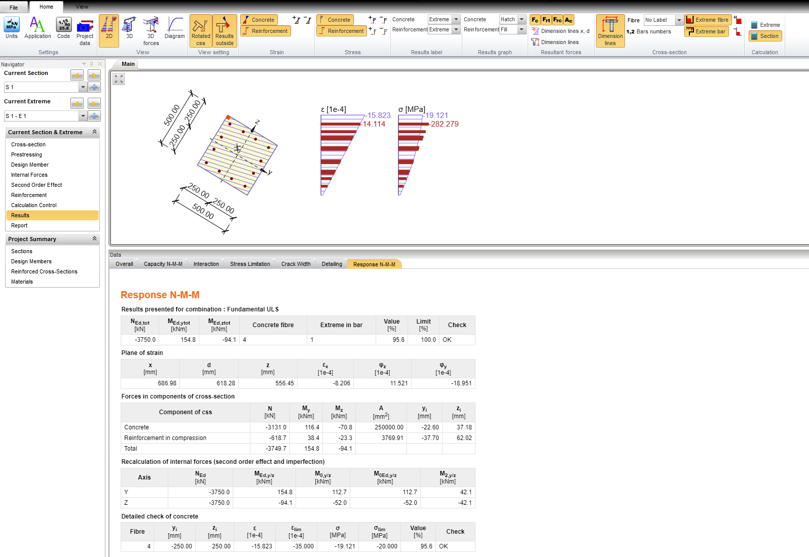